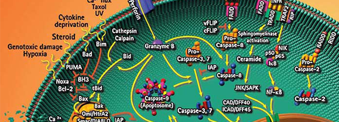

信号通路研究专区
信号通路是指能将细胞外的分子信号经细胞膜传入细胞内发挥效应的一系列酶促反应通路。这些细胞外的分子信号（称为配体，ligand）包括激素、生长因子、细胞因子、神经递质以及其它小分子化合物等。构成信号通路的主要成员是蛋白激酶和磷酸酶，它们能够快速改变和恢复下游蛋白的构象。
相关专题 查看所有信号通路研究专题 >

干细胞研究专区
干细胞是人体内最原始的细胞，它具有较强的再生能力，在干细胞因子和多种白细胞介素的联合作用下可扩增出各类的细胞。造血干细胞应用较早，在五十年代临床上就开始应用骨髓移植来治疗血液系统疾病。
相关专题 查看所有干细胞研究专题 >
微生物学研究专区
信号通路是指能将细胞外的分子信号经细胞膜传入细胞内发挥效应的一系列酶促反应通路。这些细胞外的分子信号（称为配体，ligand）包括激素、生长因子、细胞因子、神经递质以及其它小分子化合物等。构成信号通路的主要成员是蛋白激酶和磷酸酶，它们能够快速改变和恢复下游蛋白的构象。
相关专题 查看所有微生物学研究专题 >

植物学研究专区
干细胞是人体内最原始的细胞，它具有较强的再生能力，在干细胞因子和多种白细胞介素的联合作用下可扩增出各类的细胞。造血干细胞应用较早，在五十年代临床上就开始应用骨髓移植来治疗血液系统疾病。
相关专题 查看所有植物学研究专题 >